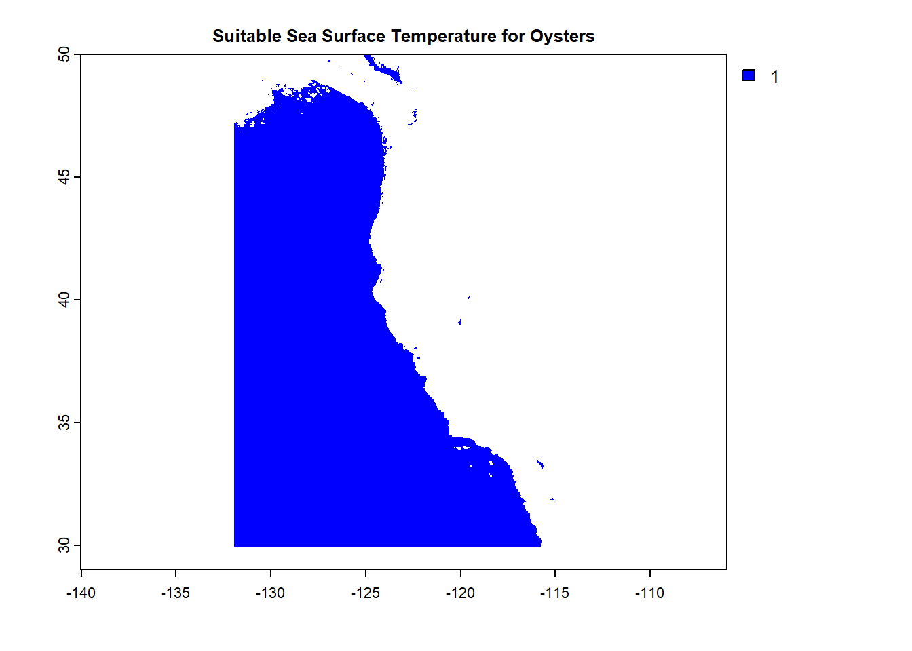
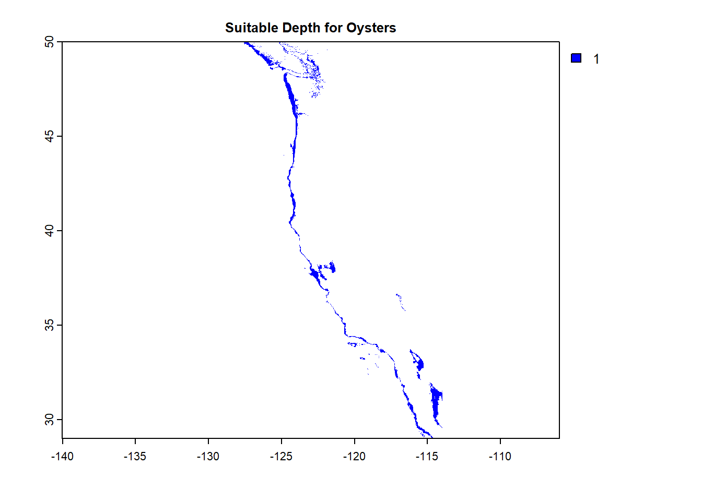
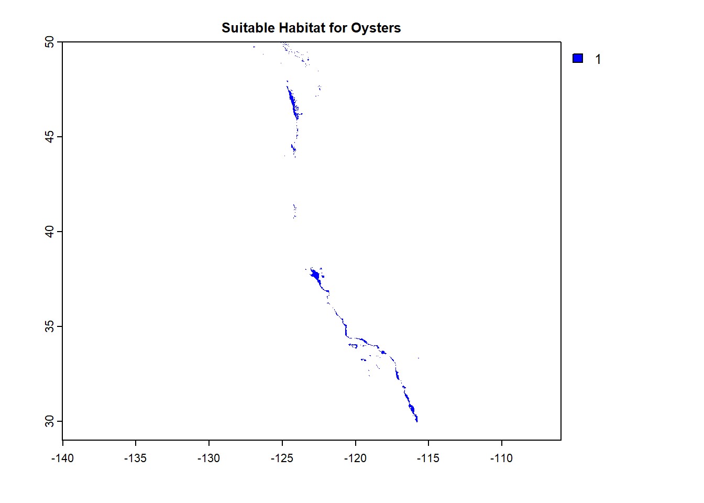
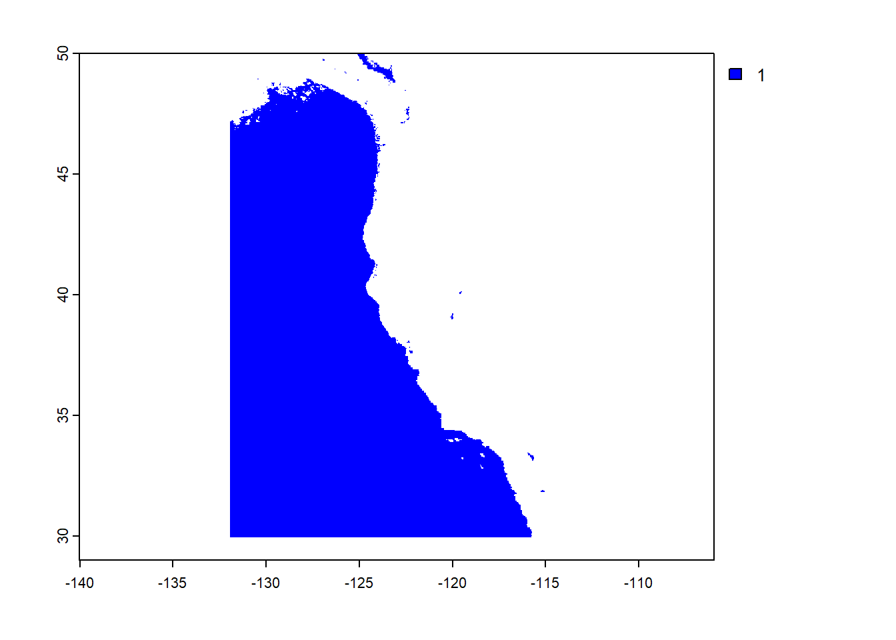
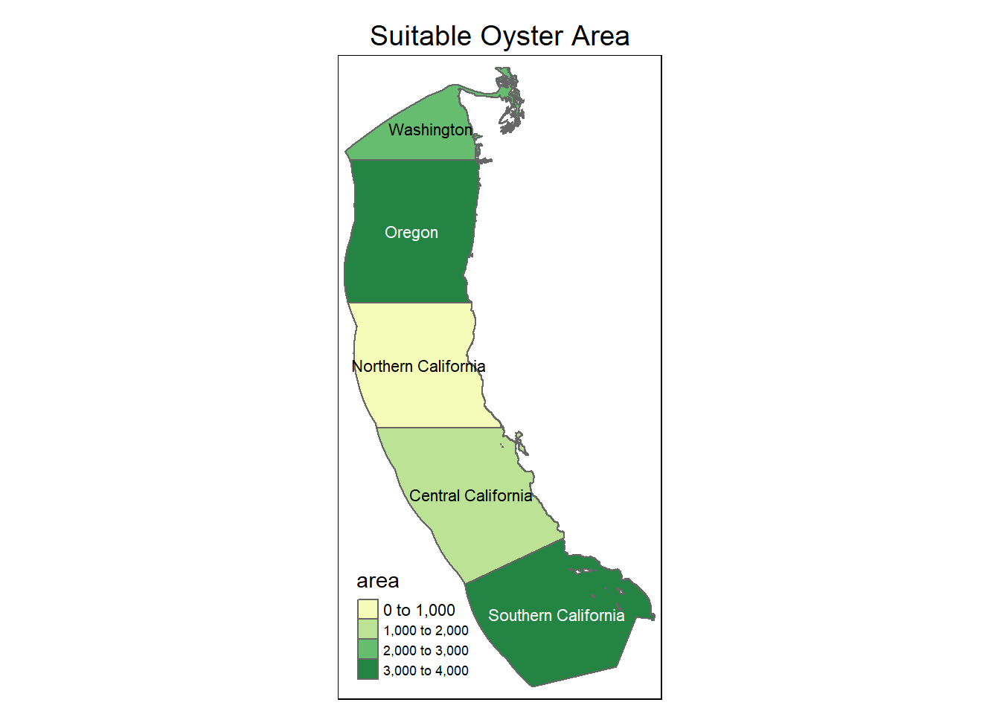
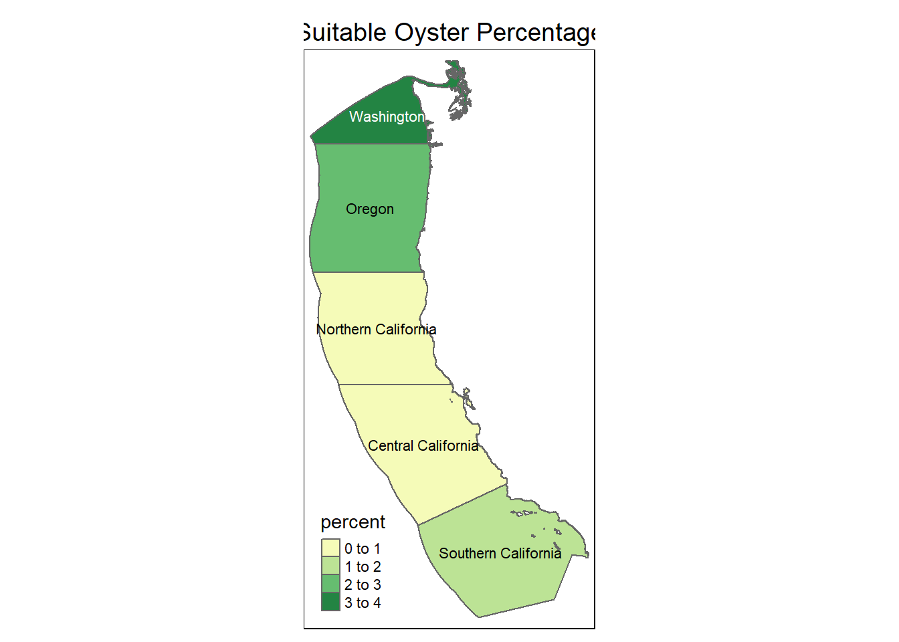
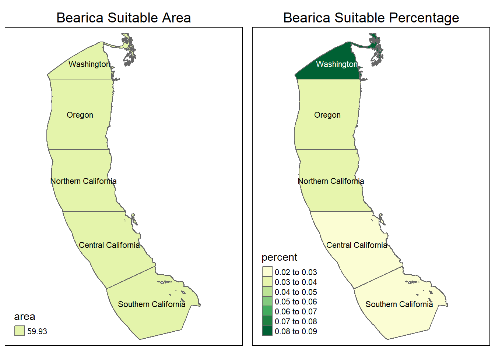

library(terra)
library(here)
library(sf)
library(tidyverse)
library(tmap)
library(ggpubr) # Combines ggplotsIntroduction
This project was adapted from an assignment to explore the suitable habitats for species along the Western Coast, beginning with an Oyster and then creating a function to explore any species. The parameters to explore are depth and sea surface temperature. This could further be expanded with more variables, including change of temperature within the water column. These regions are broken down to five Exclusive Economic Zones (EEZ) along the West Coast of the US.
This could be applied for restoration efforts to determine where habitat is suitable for any oceanic species.
Data
Average annual sea surface temperature (SST) from the years 2008 to 2012: NOAA’s 5km Daily Global Satellite Sea Surface Temperature Anomaly v3.1.
Depth of the ocean: General Bathymetric Chart of the Oceans (GEBCO).1
Exclusive Economic Zones off of the west coast of US: Marineregions.org.
The data is in both raster and vector formats, reprojected to match coordinate reference systems. The series of raster files depicting each yearly sea surface temperature are all collapsed to show the average for the time range.
#### IMPORT DATA
Regions <- read_sf("~/MEDS/Fall-EDS223-Geospatial/data/data_4/wc_regions_clean.shp")
Annual2008 <- rast("~/MEDS/Fall-EDS223-Geospatial/data/data_4/average_annual_sst_2008.tif")
Annual2009 <- rast("~/MEDS/Fall-EDS223-Geospatial/data/data_4/average_annual_sst_2009.tif")
Annual2010 <- rast("~/MEDS/Fall-EDS223-Geospatial/data/data_4/average_annual_sst_2010.tif")
Annual2011 <- rast("~/MEDS/Fall-EDS223-Geospatial/data/data_4/average_annual_sst_2011.tif")
Annual2012 <- rast("~/MEDS/Fall-EDS223-Geospatial/data/data_4/average_annual_sst_2012.tif")
Depth <- rast("~/MEDS/Fall-EDS223-Geospatial/data/data_4/depth.tif")
#### STACK ANNUAL DATA
SSTAnnual <- c(Annual2008, Annual2009, Annual2010, Annual2011, Annual2012)
#### Reproject
st_crs(SSTAnnual) # WGS84, EPSG 9122
st_crs(Regions) # WGS84 EPSG 4326
st_crs(Depth) # WGS84, EPSG 4326
SSTAnnual <- project(SSTAnnual, Depth)
st_crs(SSTAnnual) # WGS84, EPSG 4326
#### Find mean Sea Surface Temperature
# Collapse down layers to one SST mean
SSTMean <- mean(SSTAnnual)
SSTMean <- (SSTMean$mean - 273.15)
#Check they will match
SSTDepth <- c(Depth, SSTMean)Find suitable locations
Reclassification here is used to select cells matching range of sea surface temperature and depth suitable for Oysters and set them as 1, all other cells are set as NA. A function is then used to combine the two reclassified raster files to find cells that satisfy both. Each plot depicts the reclassified cells for each step.
#### Set up reclassification matrices
SSTrcl <- matrix(c(-Inf, 11, NA,
11, 30, 1, # sea surface temperature: 11-30°C
30, Inf, NA),
ncol = 3, byrow = TRUE)
OysterSST <- classify(SSTMean, rcl = SSTrcl)
plot(OysterSST, col = "blue", main = "Suitable Sea Surface Temperature for Oysters")
Depthrcl <- matrix(c(-Inf, -70, NA,
-70, 0, 1, # depth: 0-70 meters below sea level
0, Inf, NA),
ncol = 3, byrow = TRUE)
OysterDepth <- classify(Depth, rcl = Depthrcl)
plot(OysterDepth, col = "blue", main = "Suitable Depth for Oysters")
#### Overlay # Find areas that satisfy BOTH
fun_mult = function(x,y){return(x*y)} # Function to multiply layers
OystersHabitat <- lapp(c(OysterSST, OysterDepth), fun_mult)
plot(OystersHabitat, col = "blue", main = "Suitable Habitat for Oysters")
Determine the most suitable EEZ
The Regions vector is now overlayed with the Oysters Habitat as a mask to determine suitable habitat in each region.
#### Turn Regions data into raster
Regions$rgn <- as.factor(Regions$rgn)
RegionsRast <- rasterize(vect(Regions), OystersHabitat, field = "rgn")
plot(RegionsRast)
#### Select suitable cells in EEZ
ROmask <- mask(RegionsRast, OystersHabitat)
#### Find total suitable area within each EEZ
OysterZone <- expanse(ROmask, unit = "km", byValue = TRUE)
#### Find percentage of each zone
OysterRegion <- cbind(OysterZone, Regions)
OysterRegion <- OysterRegion |>
mutate(percent = (area/area_km2)*100)Visualizations
#### Total suitable area by region
tm_shape(OysterRegion) +
tm_polygons("area", palette = "YlGn") +
tm_text(text = "rgn",
size = .7) +
tm_layout(main.title = "Suitable Oyster Area",
main.title.size = 1.2,
main.title.position = "center") +
tm_layout(legend.position = c("left", "bottom"))Some legend labels were too wide. These labels have been resized to 0.55, 0.55, 0.55. Increase legend.width (argument of tm_layout) to make the legend wider and therefore the labels larger.
#### Percent suitable area by region
tm_shape(OysterRegion) +
tm_polygons("percent", palette = "YlGn") +
tm_text(text = "rgn",
size = .7) +
tm_layout(main.title = "Suitable Oyster Percentage",
main.title.size = 1.2,
main.title.position = "center") +
tm_layout(legend.position = c("left", "bottom"))
Creating a Function
This function will repeat the previous steps for any species habitat with the inputs of temperrature and depth ranges.
Species_Habitat <- function(species_name, temp_min, temp_max, depth_max, depth_min){
# RECLASSIFICATION
SSTrcl <- matrix(c(-Inf, temp_min, NA,
temp_min, temp_max, 1,
temp_max, Inf, NA),
ncol = 3, byrow = TRUE)
Depthrcl <- matrix(c(-Inf, depth_max, NA,
depth_max, depth_min, 1,
depth_min, Inf, NA),
ncol = 3, byrow = TRUE)
# APPLY RECLASS TO BOTH
SpeciesSST <- classify(SSTMean, rcl = SSTrcl)
SpeciesDepth <- classify(Depth, rcl = Depthrcl)
SpeciesHabitat <- lapp(c(SpeciesSST, SpeciesDepth), fun_mult)
# SELECT SUITABLE CELLS IN EEZ
Regions$rgn <- as.factor(Regions$rgn)
RegionsSpecRast <- rasterize(vect(Regions), SpeciesHabitat, field = "rgn")
RSpecmask <- mask(RegionsSpecRast, SpeciesHabitat)
# TOTAL SUITABLE AREA PER EEZ
SpeciesZone <- expanse(RSpecmask, unit = "km", byValue = TRUE)
SpeciesZone # Error on row number matching???
# PERCENTAGE PER EEZ
SpeciesRegion <- cbind(SpeciesZone, Regions)
SpeciesRegion <- SpeciesRegion |>
mutate(percent = (area/area_km2)*100)
# MAP AREA BY REGION
SpecAreaMap <- tm_shape(SpeciesRegion) +
tm_polygons("area", palette = "YlGn") +
tm_text(text = "rgn",
size = .7) +
tm_layout(main.title = print(paste0(species_name, " Suitable Area")),
main.title.size = 1.2,
main.title.position = "center") +
tm_layout(legend.position = c("left", "bottom"))
# MAP PERCENT BY REGION
SpecPercMap <- tm_shape(SpeciesRegion) +
tm_polygons("percent", palette = "YlGn") +
tm_text(text = "rgn",
size = .7) +
tm_layout(main.title = print(paste0(species_name, " Suitable Percentage")),
main.title.size = 1.2,
main.title.position = "center") +
tm_layout(legend.position = c("left", "bottom"))
# DISPLAY MAPS
tmap_arrange(SpecAreaMap, SpecPercMap)
}
Species_Habitat("Bearica", 17, 33, -20, 0)[1] "Bearica Suitable Area"
[1] "Bearica Suitable Percentage"
Footnotes
GEBCO Compilation Group (2022) GEBCO_2022 Grid (doi:10.5285/e0f0bb80-ab44-2739-e053-6c86abc0289c).↩︎
Citation
BibTeX citation:
@online{dale2022,
author = {Erica Dale},
title = {Geospatial {Blog} {Post}},
date = {2022-12-02},
url = {http://ericamarie9016.github.io/2022-12-02-geospatial},
langid = {en}
}
For attribution, please cite this work as:
Erica Dale. 2022. “Geospatial Blog Post.” December 2, 2022.
http://ericamarie9016.github.io/2022-12-02-geospatial.